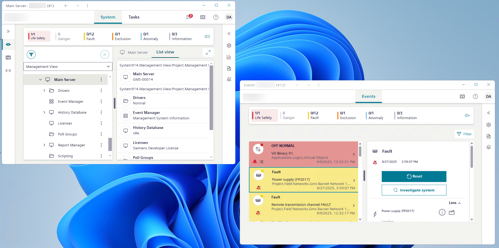
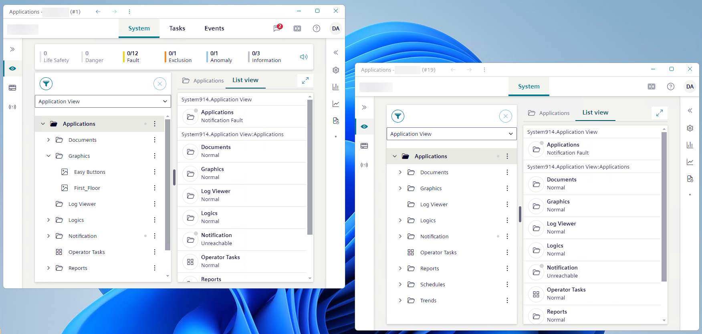

Work With Multiple Flex Windows
The Flex Client desktop app supports multi-window layouts with one detached Events workspace and/or additional System workspace windows, arranged on a single screen or on multiple monitors.
NOTE: Depending on configuration, your Flex desktop app may have a fixed window layout that you cannot change, or you may be able to open, close, resize and rearrange windows.
Events Workspace in Separate Window
In this type of layout, instead of having Events, System, and Tasks tabs in the same window, the Events workspace is detached into its own separate window. You can have only one detached Events workspace window like this. If you close it, it reverts back to an Events tab alongside System and Tasks.

Open a separate Events window
- You have the necessary access rights to modify the window layout.
- Events currently appears as a tab alongside System and Tasks.
- You are not using a UL/ULC profile, otherwise this feature is not allowed. For UL/ULC profiles, use only the Additional System Windows feature.
- In the horizontal navigation bar, select .
- The right panel expands and displays the Layout settings.
- In the Manage windows area, select: Separate events window.
- The Events workspace is detached in a separate Events window. The Events tab no longer appears alongside System and Tasks.
Reattach a separate Events window
- You have the necessary access rights to modify the window layout.
- The Events workspace is currently housed in a separate window.
- Do one of the following:
- Select Close in the top right corner of the Events window.
- In the Events detached window, select , and in the Manage windows area select Merge events to primary window.
- In the System main window, select , and in the Manage windows area select Merge events window.
- The Events detached window closes. The Events tab reappears alongside System and Tasks.
Handle events from detached Events window
Depending on configuration, event handling can automatically start in a separate Events window, or you can handle events manually in the usual way, with interactions between the Events and System windows. For example:
- In the main System window, display the event overlay from a graphic, and then select Go to events.
- The list of events displays filtered in the separate Events window. It focuses on the event relevant to the overlay selection. You can handle this event as usual.
- In the separate Events window, select the event you want to handle and then in the event details, select to inspect the event source.
- The object in alarm appears selected in the tree of the main System window as usual.
- In the separate Events window, select the event you want to handle and then in the event details, select Investigate system.
- The Investigative treatment bar displays along the top of the System window (main and any additional ones) as well as along the top of the separate Events window. The object that caused the alarm is selected in the tree of the main System window as usual. You can investigate events from the main System window or any additional windows as usual.
- In the separate Events window, select the event you want to handle and then in the event details, select Assisted treatment.
- Assisted treatment is initiated for the selected event in the separate Events window. The event details refresh to display also a sequence of steps you must follow to handle that event, while the Leave button allows you to interrupt assisted treatment as usual.
Additional System Windows
- Additional System windows have limited functionality. In fact, the main System window is the only one where you can handle notification messages, mute or unmute the buzzer, and access the full system menu.
- You can change the settings in the Layout pane from the main System window as well as any of the additional ones. Those changes will apply to all the windows, except for pane layout, which applies only to the specific window for which you changed the pane layout.
- When you close an additional System window, only that window is closed.
- When you close the main System window, do a logoff, or are logged off automatically due to inactivity, all the windows of the Flex desktop app close.

Open another System window
- You have the necessary access rights to modify the window layout.
- In the horizontal navigation bar, select .
- The right panel expands and displays the Layout settings.
- In the Manage windows area, select New system window.
- Another System window displays on the same screen.
Inspect objects from an additional System window
- You have a layout with multiple System windows.
- In the tree of the main System window, next to the system object you want to work with select and then choose Send to other window.
- Select the thumbnail that corresponds to the additional System window to which you want to send your selection. Each thumbnail is identified by the header indicating the selection in System tree.